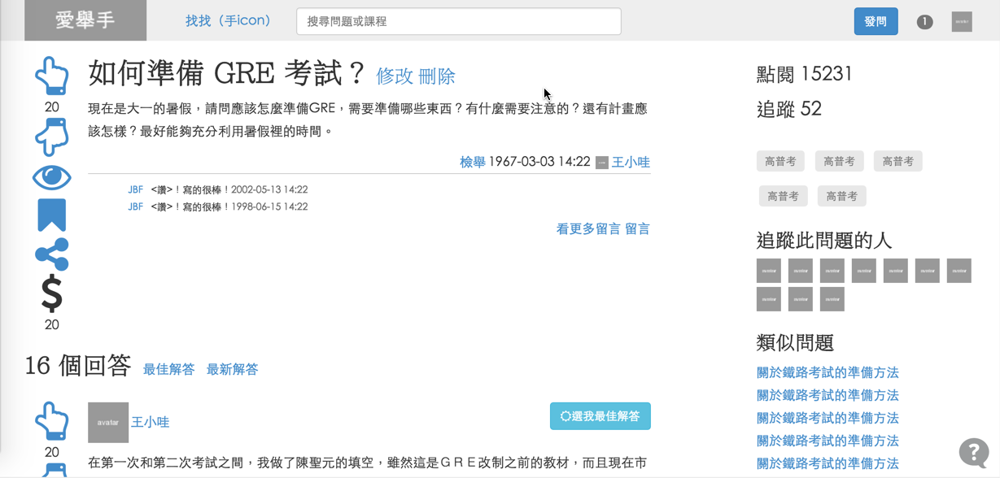

愛舉手問答知識平台
愛舉手平台為針對考生族群的問答知識平台。任何人都可以免費加入會員，進行發問或回答。另外也提供專家付費服務，可以支付付費點數請專家回答問題，快速取得專業的答案。
My Role
- 調查研究
- 針對國內外問答網站進行資料收集、調查研究、競品分析等。
- 產品規劃
- 與開發團隊討論擬出平台的目標客群、商業模式與功能需求。
- 功能規格制定
- 依照研究與團隊討論結果，製作 Function List 等規格文件
- 資訊架構設計
- 規劃設計前後台架構與流程，製作資訊架構圖
- UI 設計
- 規劃設計頁面資訊與排版，繪製 Wireframe 、製作 Prototype
Overview
Research
起初我們資訊部門團隊留意到公司討論區網站有著相當高的訪客流量，佔了全公司網站總流量的一半。因此最先我們是朝著如何加以利用這些流量，改版、強化討論區的功能轉成論壇此方向去收集資料。
在收集資料的過程中，我們發現以討論為主的平台除了論壇以外，還有問答型式的交流平台，如：知乎、Quora、Yahoo知識家等等。而我們也發現國內外這類型的問答平台越來越多，有開始增長的趨勢。
由於公司是公職考試教育產業，主要的市場族群為考生族群，經過內部討論後，認為採取問答方式非常適合作為學生進行準備考試時的學習方式，進一步可以作為利用社群力量，集結眾人智慧且分享互動的社群網站，比論壇有著更多面向的發展和可能性，如：
- 當問答累積到一定數量後，可以作為分析近期考生需求趨勢之數據來源。
- 可以收集整理優質問答的資料，製作線上出版電子書。
- 結合多媒體、多平台的提問和回答方式，如：提供行動版本，利用手機進行問答、用文字或影音線上客服的方式提供線上諮詢（需和專家合作）
- 其他種創新商業模式，EX：販售專家的回答，或是提供專業資源的回覆，使用者需付費才能取得專家意見和資源。
經過多次討論，最後我們資訊部門和上頭取得共識，決定進行問答知識平台「愛舉手」的開發。
Product Planning
在規劃商業模式這邊我們做了競品研究，參考其他問答平台的收費方式。最後決定愛舉手平台在營運與商業模式上採取 Freemium 機制，任何人都可以免費加入會員，進行發問或回答，除外會提供專家收費機制，藉由此支撐平台的營運費用，並確保專家服務的品質。藉由保持良好的功能服務跟經營品質讓平台使用者向上成長，而透過使用者發問與回答提供平台更多的內容，提昇平台的價值，進而吸引更多使用者進入愛舉手平台，建立起使用者與平台一同成長的良好循環。
而未來也有可能跟教育或課程相關的廠商合作，讓他們能夠在平台上輪播廣告或是課程資源，創造並行收益。
Specification
在參考其他相似類型的平台後，團隊內部會快速討論列舉出各種功能，然後由我負責繪製 Functional Map 並將其分類，讓團隊內部成員可以取得共識，了解整個產品的功能輪廓。

之後我會再訂立詳盡的功能與系統架構，並製作 Function List ，並且和團隊成員確認每項功能，並初步評估開發難度與商業價值等可行性來做刪減，或是分階段上線。
以進階功能為例，當時我們討論了一些非必要但未來可行的功能，因此均規劃到第二階段再進行開發，如：
- 活動報名：收集、募集整理各種考試相關活動（說明會、講座等）
- 學習地圖：專家可以用發文功能自訂一系列的文字課程，讓其他學習者沿著文章順序一步一步進行學習。每個課程還可以綁指定的問題供學習者做練習
- 讀書會：類似開FB社團、小圈圈的概念。讓會員可以開設團體專屬的問題區和BLOG，供成員之間討論。
Information Architecture
確立功能範圍之後，我就開始著手製作設計整個平台架構與流程（UI FLOW），這邊包括前台與會員登入後的後台兩大區塊。後續設計跟系統開發都會以這樣的架構與流程作為基底進行開發。

UI 設計
功能、架構與流程都確認完畢後，我會依照 UI FLOW 開始設計各個頁面的 Wireframe，過程中也會不斷跟團隊確認功能與當下發現的問題，釐清各個細節。
作為設計規劃階段的最後一個部份，我會用 Bootstrap 製作實際真的可以操作的 Prototype。我會透過這樣的 Prototype 來了解各個頁面之間的連結並檢視互動設計，也會用來跟團隊與上頭確認流程、架構、頁面與功能細項，達成共識後才正式進入產品開發階段。
